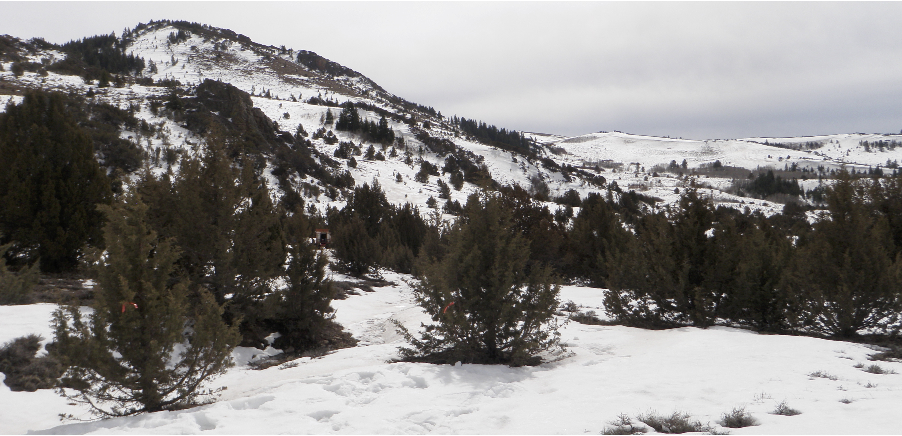

Title: Surface water input from snowmelt and rain throughfall in western juniper: Potential impacts of climate change and shifts in semi-arid vegetation.
Authors: Niemeyer, R.J., T.E. Link, M.S. Seyfried, and G.L. Flerchinger
Journal: Hydrological Processes (2016) doi: 10.1002/hyp.10845.
Abstract: In the western USA, shifts from snow to rain precipitation regimes and increases in western juniper cover in shrub-dominated landscapes can alter surface water input via changes in snowmelt and throughfall. To better understand how shifts in both precipitation and semi-arid vegetation cover alter above-ground hydrological processes, we assessed how rain interception differs between snow and rain surface water input; how western juniper alters snowpack dynamics; and how these above-ground processes differ across western juniper, mountain big sagebrush and low sagebrush plant communities. We collected continuous surface water input with four large lysimeters, interspace and below-canopy snow depth data and conducted periodic snow surveys for two consecutive water years (2013 and 2014). The ratio of interspace to below-canopy surface water input was greater for snow relative to rain events, averaging 79.4% and 54.8%, respectively. The greater surface water input ratio for snow is in part due to increased deposition of redistributed snow under the canopy. We simulated above-ground energy and water fluxes in western juniper, low sagebrush and mountain big sagebrush for two 8-year periods under current and projected mid-21st century warmer temperatures with the Simultaneous Heat and Water (SHAW) model. Juniper compared with low and mountain sagebrush reduced surface water input by an average of 138 mm or 24% of the total site water budget. Conversely, warming temperatures reduced surface water input by only an average of 14 mm across the three vegetation types. The future (warmer) simulations resulted in earlier snow disappearance and surface water input by 51 and 45 days, respectively, across juniper, low sagebrush and mountain sagebrush. Information from this study can help land managers in the sagebrush steppe understand how both shifts in climate and semi-arid vegetation will alter fundamental hydrological processes.
The article can be found here or if you do not have access, you can download the pre-prints here.
